Truss bridge
The Links at Northfork · Ramsey, MNThe big red-brown steel arch bridge that carries the cart path over the road by the clubhouse, on stone-block abutments.
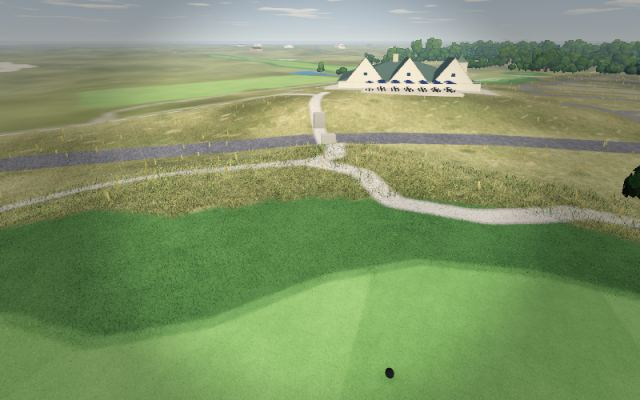
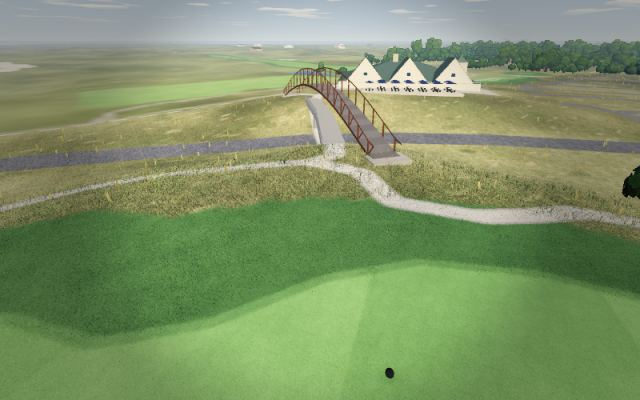
October 23, 2026. Courses picked up their real landmarks from photos of each course: bridges, barns, a silo, a gazebo and pavilion, a hotel tower, flowing waterfalls, stone ledges and flower beds. Here's each one before and after, seen from the course. (The waterfalls move in the game.)
The big red-brown steel arch bridge that carries the cart path over the road by the clubhouse, on stone-block abutments.


The farm silo that stands beside the 4th green.
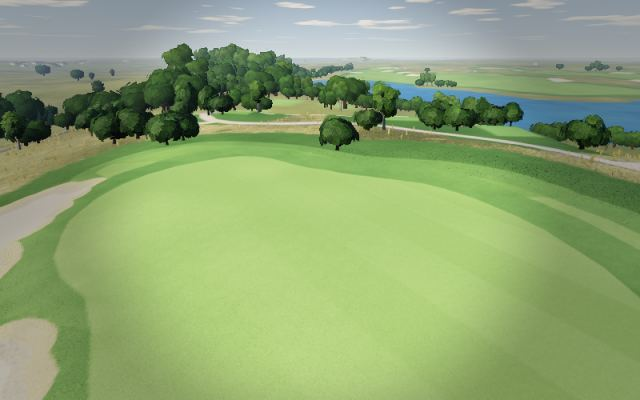
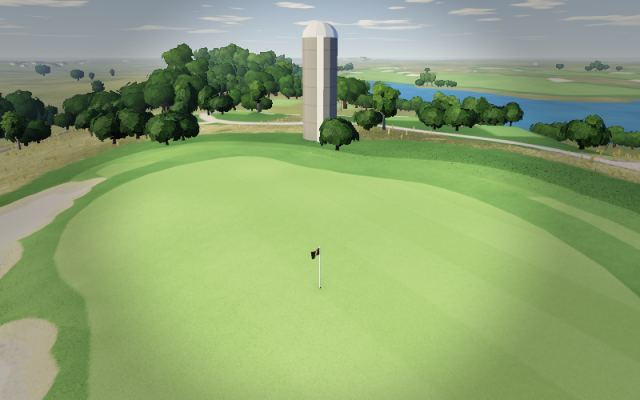
The long grey timber boardwalk that crosses the pond.
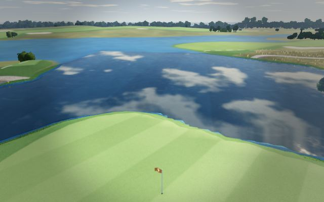
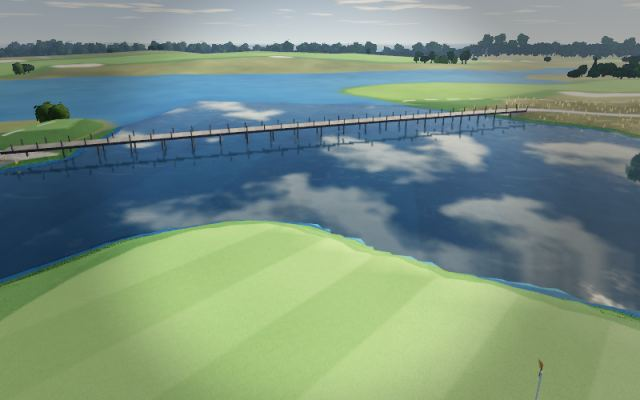
A roofed wooden covered bridge over the marsh.
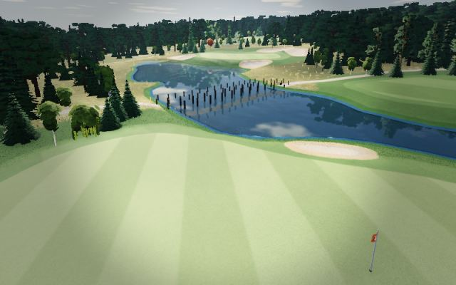
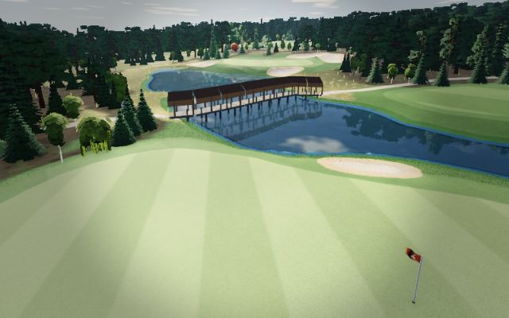
The covered timber pavilion on the pond bank behind a green.
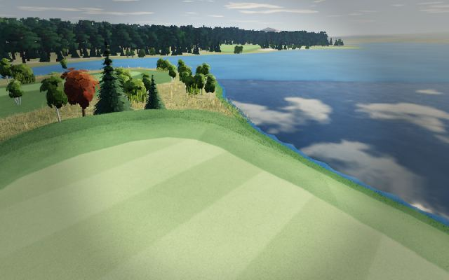
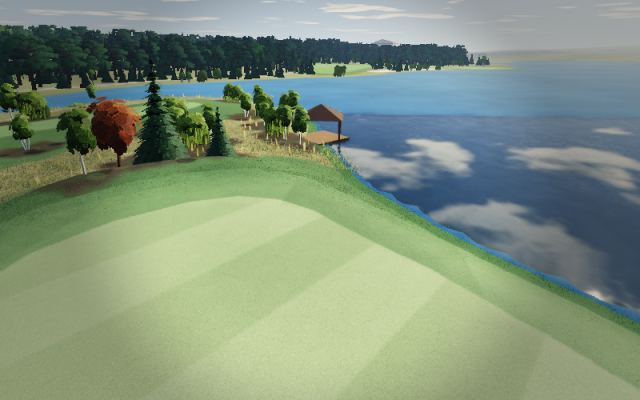
The building by the pond was already there; it's now drawn as The Barn from the club's logo, with barn doors and its real shape.
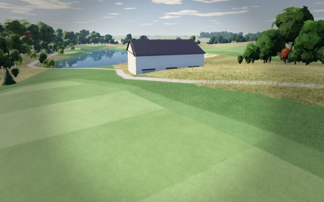
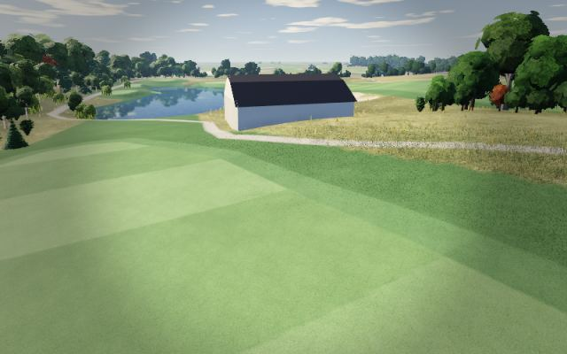
The small dark barn by the par-3 pond.
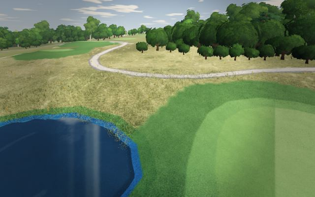
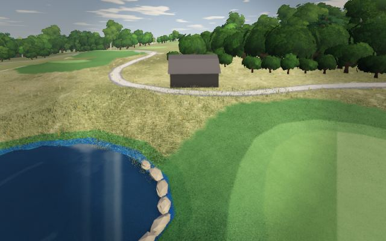
The white gazebo on the bank of the big pond.
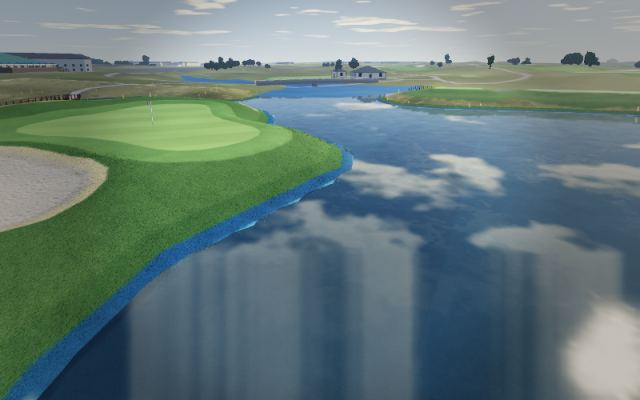
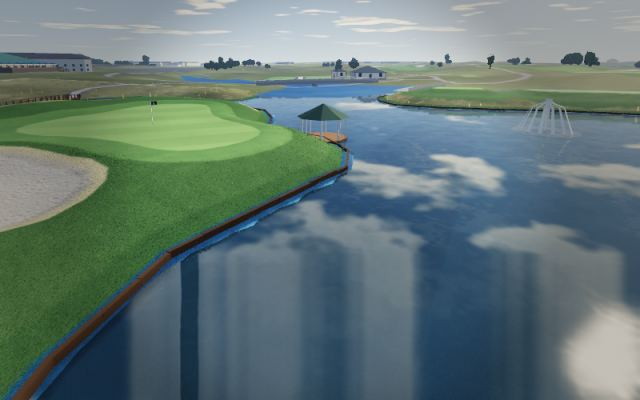
Mystic Lake's hotel tower rising over the casino, with its MYSTIC LAKE sign, seen across the course.
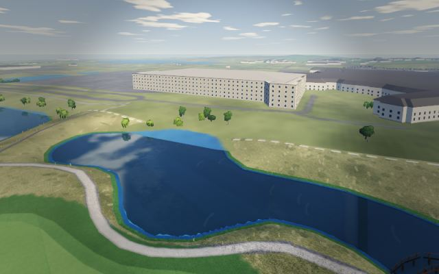
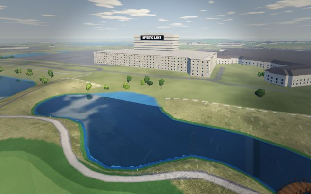
A flowing waterfall over limestone ledges into the pond, with a foam pool where it lands.
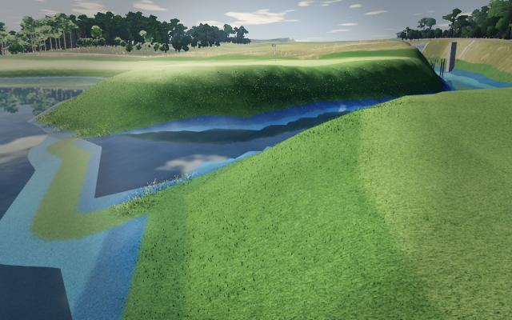
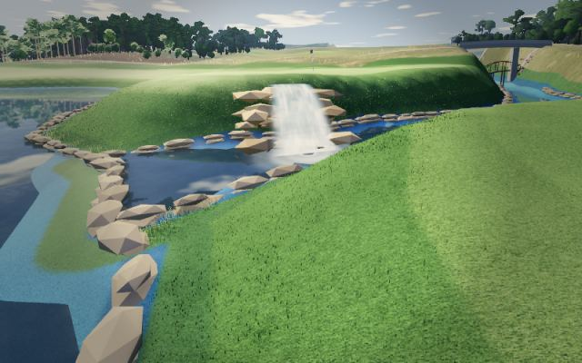
The second waterfall, by the 8th green.
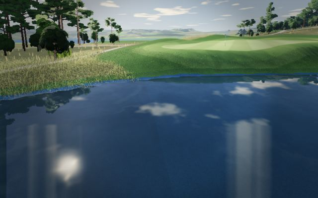
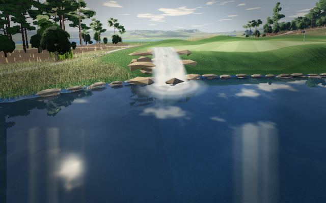
A stone waterfall cascading into the pond.
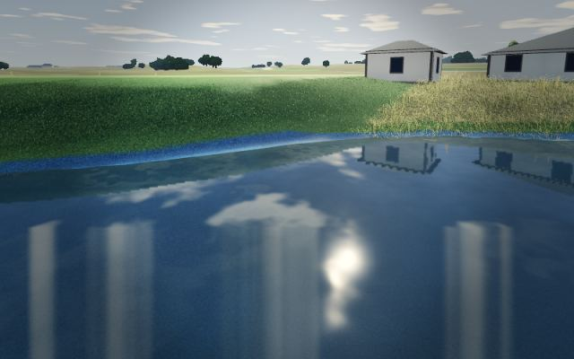
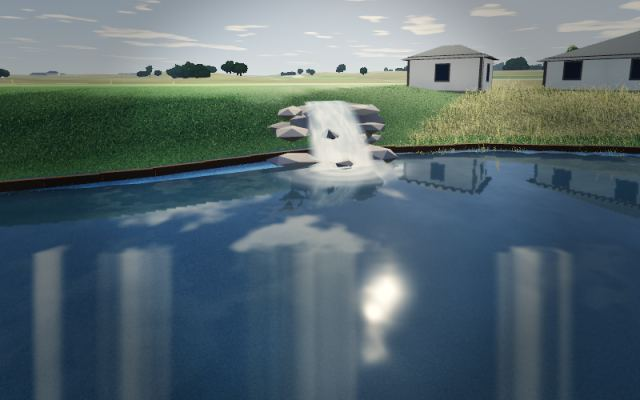
Stacked limestone ledges along the pond banks by the greens.
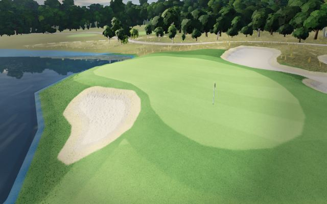
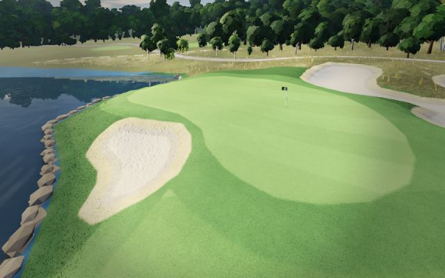
Red begonia beds behind the tees.
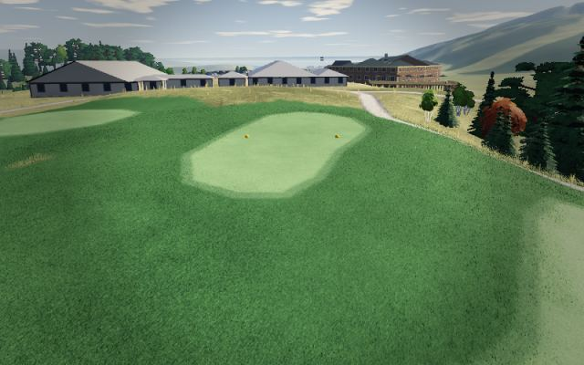
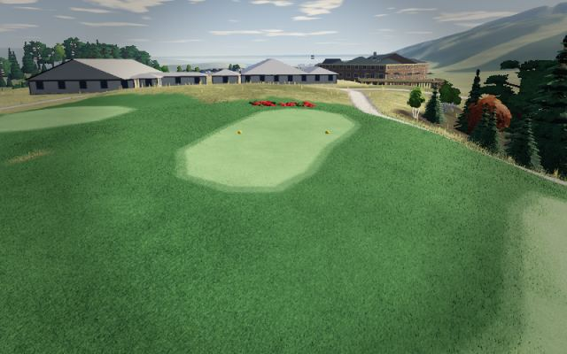
Red begonia beds behind the greens.
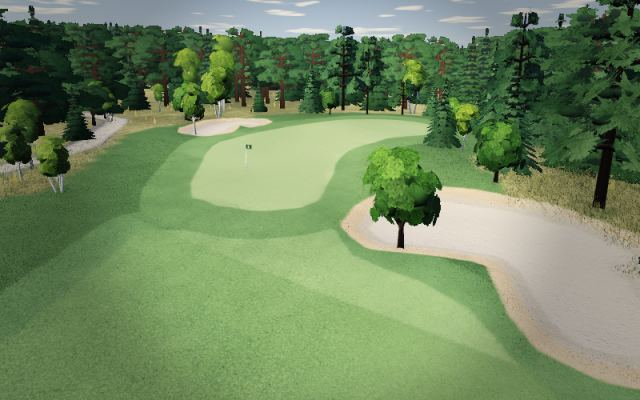
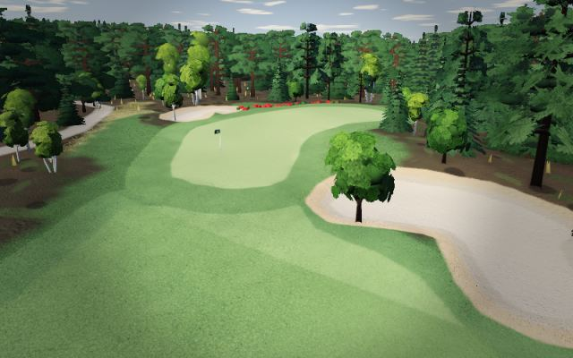
White marble rock by the 5th tee.
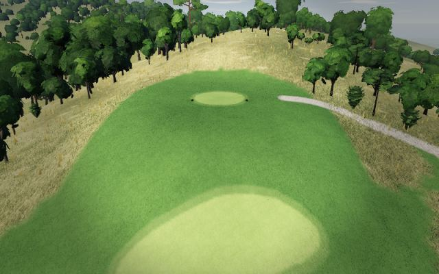
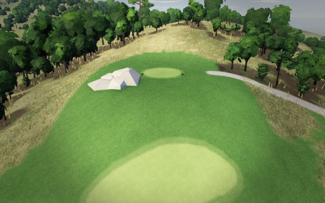
The tall bare dead tree near the 12th.
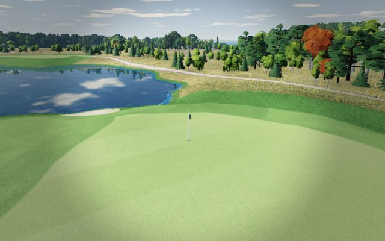
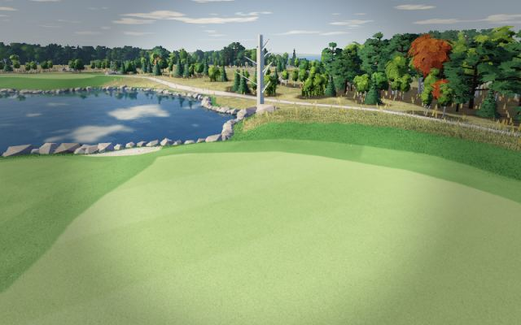
The Fortune Bay resort and casino now stand at their real height over the course.
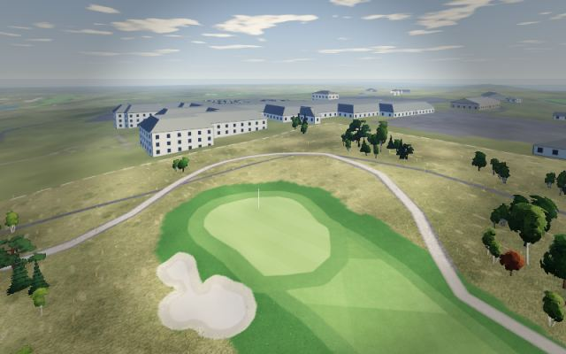
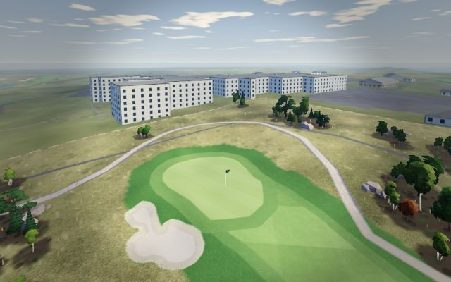